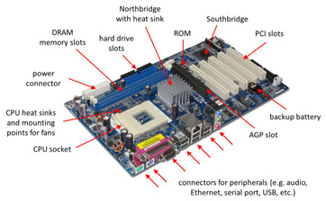

Brief defintion for the Motherboard
The motherboard serves as a single platform to connect all of the parts of a computer together.
It connects the CPU, memory, hard drives, optical drives, video card, sound card, and other ports and expansion cards directly or via cables.
It can be considered as the backbone of a computer.
A labeled image for the Motherboard :)

The other related topics